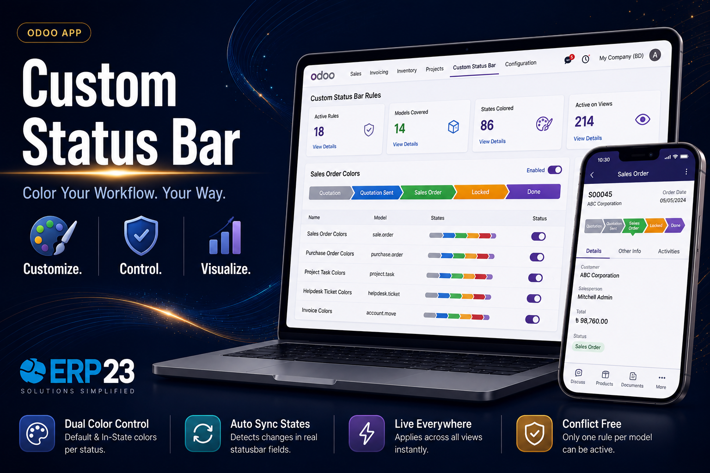

Supports
Availability

Custom Statusbar Color
Configurable per-state coloring for statusbar widgets, rule by rule.
Module Highlights
No-Code Rule-Based Coloring
Pick any Odoo model from a dropdown and create color rules directly in the backend UI — no XML, no Python, and no developer involvement required.
Automatic State Discovery & Rescan
Statusbar states are detected live when a model is selected, and rules can be re-synced anytime to adapt to view changes while preserving existing colors.
Per-State Dual Coloring
Each workflow state gets an independent Default (inactive) and In-State (active) background color, with text contrast automatically adjusted between black and white for readability.
Global Real-Time Application
Colors apply across form, list, and kanban views and update live across active sessions via bus notifications — with no page refreshes and no view changes.
Dependencies
base webScreenshots
No-Code Rule-Based Coloring
Custom Statusbar Color puts statusbar theming in the hands of functional users. Instead of requesting view changes from developers, anyone can define a coloring rule for any model, see its states discovered automatically, and apply the result globally.
- Rule-based configuration from a clean backend interface
- Automatic state discovery with one-click re-sync
- No XML, Python, or developer involvement needed
Live Global Real-Time Application
Colors are pushed to every statusbar widget across the interface in real time. Changes made to a rule are broadcast through the Odoo bus, so all open sessions update instantly without a single page refresh — and without touching any view definition.
- Applies across form, list, and kanban views
- Real-time updates via bus notifications
- Instant highlighting of the active workflow state
Our Services
Odoo Customization
Odoo Implementation
Odoo Support
Odoo Migration
Odoo Integration
Odoo Consultancy
Odoo Licensing
Hire Odoo Developer
Why Choose ERP23


Support & Company

Developed and maintained by ERP23.
Website: https://www.erp-23.com/
Email: erp23@brainstation-23.com